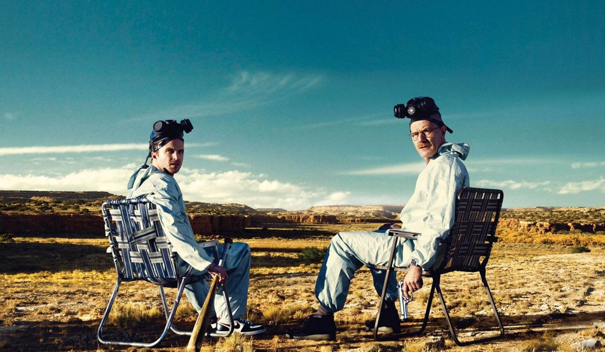
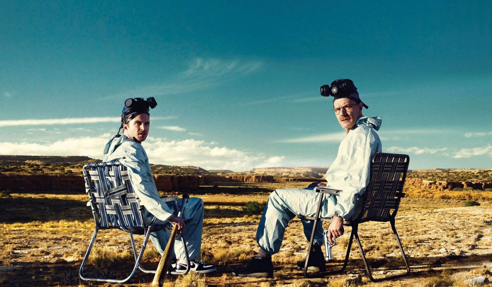

Breaking Bad
Breaking Bad es una aclamada serie de televisión estadounidense
que se emitió desde 2008 hasta 2013. La trama sigue la vida de
Walter White, un profesor de química de secundaria que, tras ser
diagnosticado con cáncer, decide producir metanfetamina para
asegurar el futuro financiero de su familia. Con la ayuda de
Jesse Pinkman, un exalumno problemático, Walter se adentra en el
peligroso mundo del narcotráfico en Albuquerque, Nuevo México.
La serie explora temas como la moralidad, la familia y las
consecuencias de las decisiones tomadas en situaciones extremas.
Breaking Bad es considerada como una de las mejores series de
televisión de todos los tiempos.
Formula 1
La Fórmula 1 es una categoría de automovilismo de velocidad que se
lleva a cabo en circuitos especialmente diseñados para este deporte,
en diferentes partes del mundo. Los equipos compiten con monoplazas
diseñados específicamente para esta categoría, los cuales son
construidos y mejorados constantemente por los ingenieros y mecánicos
de cada equipo. Los pilotos compiten por el Campeonato Mundial de
Fórmula 1, que se otorga al piloto que acumule la mayor cantidad de
puntos al final de la temporada. La Fórmula 1 es conocida por ser una
categoría de alto nivel técnico y competitivo, en la que se combinan
habilidades de conducción, estrategia y tecnología de vanguardia.
Arctic Monkeys
Arctic Monkeys es una banda de rock británica formada en 2002 en
Sheffield, Inglaterra. La banda se hizo popular en la década
de 2000 gracias a su sonido enérgico y sus letras ingeniosas, que
capturaron la atención del público y la crítica. Entre sus
canciones más conocidas se encuentran "I Bet You Look Good on the
Dancefloor", "Fluorescent Adolescent" y "Do I Wanna Know?". La banda
ha experimentado con diferentes estilos y ha evolucionado a lo largo
de los años, pero siempre ha mantenido su esencia rockera y distintiva.
Arctic Monkeys es considerada como una de las bandas más influyentes e
importantes de la música británica de los últimos años.

 
